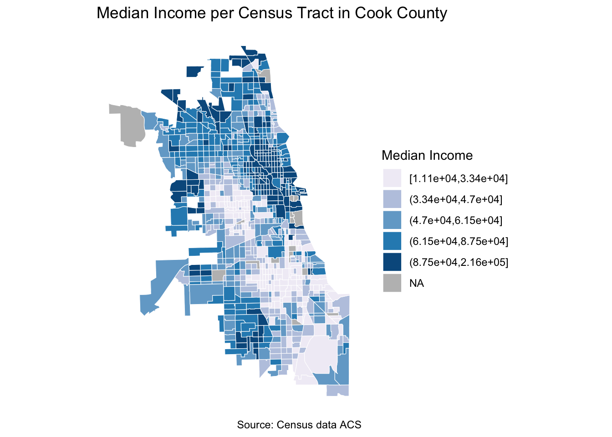
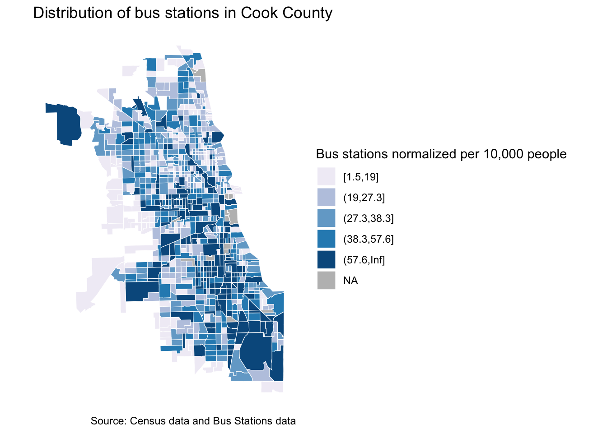
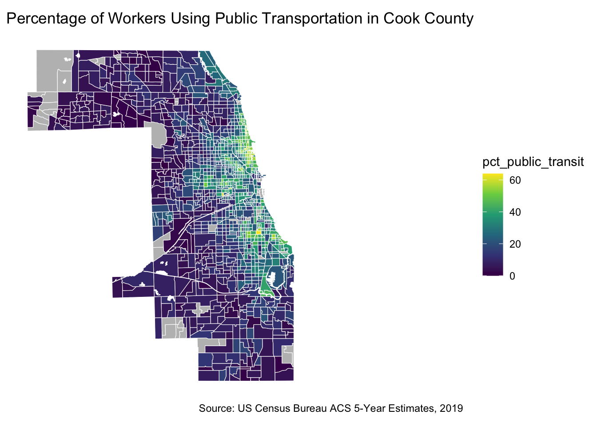
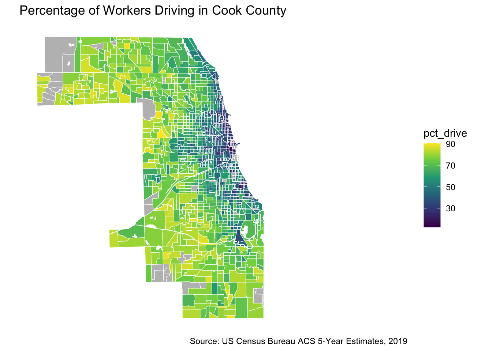
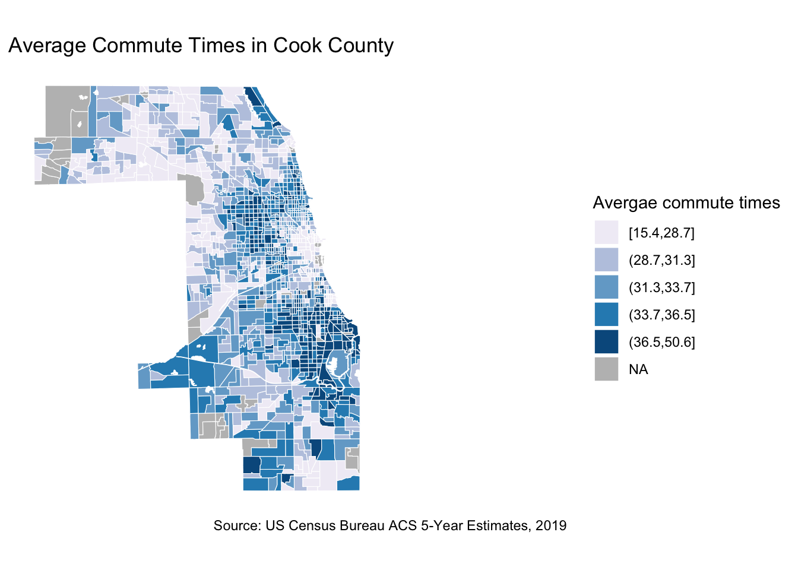
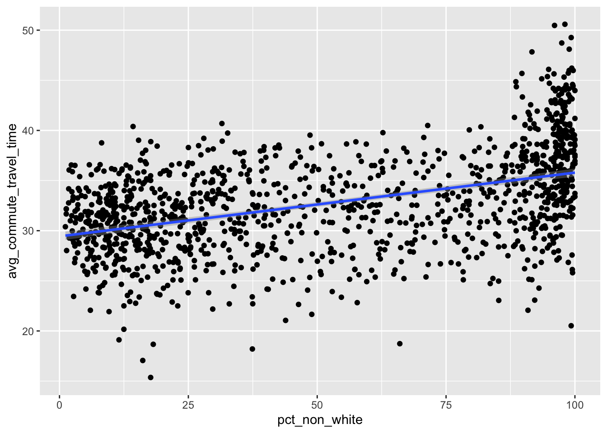

# Load required packages
library(tidycensus)
library(tidyverse)
library(sf)
library(tigris)measuring-transportation-equity
Transportation Equity
In this lab, we will learn how to use different types of data to explore and visualize access to transportation. This will allow us to identify the spatial disparities due to unequal distribution of transportation infrastructure (e.g. transit stops, transit routes, transit frequency, etc.). We are also able to see the repercussions on commute quality (i.e., trip duration, transportation expenses, etc.)
In this lab the main things you will learn are the following:
Calculate and visualize accessibility measure to transportation infrastructure (i.e., bus stops, charging stations, etc)
Calculate and visualize percentage of public transportation users
Calculate and visualize average commute times
You can build on those to see the correlation between income/race/gender and the different transportation equity measures
Access to transportation infrastructure
In this example I am using bus stops as a proxy for transportation infrastructure. You can use many other infrastructure types and explore their distribution in relation to socioeconomic and demographics of you neighborhood/region. You can find transit information from GTFS as well as open source portals. For the example I showed during class on electric charging stations, I had to grab this data from a private provider.
First lets start by loading our libraries. By now, you should be familiar with tidycensus, tidyverse, and tigris. I am introducing Simple Futures (sf) for some spatial analysis (i.e., calculating the density of buses per census tract)
Let’s download our shape files for our neighborhood. I am using Cook County as my case study. I am using the census tract level. I have defined a certain type of projection crs=4326 to unify our projection system.
Now that we have our census tract shapefile, let’s download the bus stops data, read them into a dataset, and project them accordingly.
# Read bus stop data
bus_stops <- read_csv("stops.txt")
# Convert bus_stops data to an sf object
bus_stops_sf <- st_as_sf(bus_stops, coords = c("stop_lon", "stop_lat"), crs = 4326)Last data input we need is the socioeconomic of our neighborhood. For the sake of this tutorial I am limiting it to population and household median and income. But please feel free to explore further attribute.
# Specify the ACS variables you want to download
variables <- c("B01003_001", # Total population
"B19013_001") # Median household income
# Download the data for Cook County census tracts
cook_county_data <- get_acs(geography = "tract",
state = "17",
county = "031",
variables = variables,
year = 2019,
output="wide",
survey = "acs5",
geometry = FALSE)To make our table more legible, I am renaming our columns and rescaling the median income variable
cook_county_data <- cook_county_data |>
rename(name = NAME, pop_tot = B01003_001E, med_income = B19013_001E) |>
select(GEOID, name, pop_tot, med_income)
# scale income data so you are able to correlate it with transportation infrastructure
cook_county_data <- cook_county_data |> mutate(income_scaled = scale(med_income))
library(gt)
cook_county_data |> head() |> gt()| GEOID | name | pop_tot | med_income | income_scaled |
|---|---|---|---|---|
| 17031630200 | Census Tract 6302, Cook County, Illinois | 1825 | 37422 | -0.83877210 |
| 17031580700 | Census Tract 5807, Cook County, Illinois | 5908 | 47000 | -0.57701469 |
| 17031590600 | Census Tract 5906, Cook County, Illinois | 3419 | 46033 | -0.60344186 |
| 17031600700 | Census Tract 6007, Cook County, Illinois | 2835 | 45294 | -0.62363801 |
| 17031611900 | Census Tract 6119, Cook County, Illinois | 1639 | 24507 | -1.19172646 |
| 17031804505 | Census Tract 8045.05, Cook County, Illinois | 3445 | 71438 | 0.09085204 |
Great! Now we have our census demographic data ready. Let’s spend time on preparing our bus stops data. Most counties and cities provide access to bus data through their region’s data portal or official government website. Try typing in google your city’s name along with the abbreviation “gtfs” which stands for General Transit Feed Specification. This file will have the most recent data on public transportation. This is the file that Google Maps as well as other applications rely on to predict our commute times. For example, I typed cook county gtfs in google. I chose the first option and downloaded the stops.text file.
https://www.transitchicago.com/developers/gtfs/
Remember these are represented in Lat, Long (coordinate system). We have to associate them to the correct census tracts. To do so, we will have to spatially join the bus shapefile to the census tract shapefile. We can then calculate how many bus stops per tract are available.
# buses per census tract
#sf_use_s2(FALSE)
bus_stops_per_census_tract <- bus_stops_sf %>%
st_join(cook_county_tracts) %>%
group_by(TRACTCE) %>%
summarise(bus_stop_count = n()) %>%
ungroup()View results
bus_stops_per_census_tract |> head() |> gt()| TRACTCE | bus_stop_count | geometry |
|---|---|---|
| 010100 | 2 | c(-87.6770962, -87.6663015, 42.02289954, 42.01930539) |
| 010201 | 3 | c(-87.68426462, -87.68054061, -87.6777439, 42.01941115, 42.01936686, 42.01937362) |
| 010202 | 18 | c(-87.67632528, -87.67580666, -87.67532833, -87.675138, -87.67380984, -87.67305981, -87.67316244, -87.672892, -87.67290599, -87.67281382, -87.67279844, -87.67279597, -87.6724214, -87.67456121, 42.01918517, 42.01798492, 42.01611703, 42.01595, 42.01665359, 42.0180352, 42.01896555, 42.019063, 42.01874262, 42.01850551, 42.01822603, 42.01776729, 42.01744751, 42.01276478) |
| 010300 | 17 | c(-87.67058707, -87.67103858, -87.6692571266, -87.669092, -87.66932276, -87.6689834, -87.66617692, -87.665802, -87.66551305, -87.665018, -87.66511368, -87.66467448, -87.663375, -87.663994, -87.664145, -87.66469399, 42.01928162, 42.01808861, 42.0160204165, 42.015876, 42.01931247, 42.0190888, 42.01919502, 42.018021, 42.01802283, 42.016268, 42.01580068, 42.01520955, 42.013005, 42.014113, 42.013757, 42.01482404) |
| 010400 | 9 | c(-87.65693556, -87.65834886, -87.66071682, -87.66060059, -87.660658, -87.660848, -87.661598, -87.661995, -87.662803, 41.99833161, 41.99827386, 42.003871, 42.00038209, 42.001702, 42.00572, 42.008133, 42.009358, 42.01166) |
| 010501 | 8 | c(-87.66177918, -87.661749, -87.662146, -87.6623874, -87.662952, -87.663526, -87.66563004, -87.66379711, 42.00790263, 42.007777, 42.009002, 42.0092214, 42.011414, 42.012649, 42.0078605, 42.00787643) |
Now, lets create the final dataset that includes both the bus data and demographics/socioeconomics of our neighborhood. Use join.
# Merge the count of bus stations per census tract back to the original census tracts shapefile.
cook_county_tracts_merged <- st_join(cook_county_tracts, bus_stops_per_census_tract, left = FALSE)
# Merge the count of bus stations per census tract back to the original census tracts shapefile.
cook_county_tracts_merged <- left_join(cook_county_tracts_merged, cook_county_data, by = "GEOID")Now let’s visualize this and see the ratio of population served by buses. Where are they clustered and if there are any inferences we can make.
# Create a map of income distribution.
ggplot() +
geom_sf(data = cook_county_tracts_merged,
mapping = aes(fill =cut_number((med_income), 5)),
color = "white",
size = 0.1) +
scale_fill_brewer(palette = "PuBu",
name = "Median Income",
na.value = "gray")+
labs(title = "Median Income per Census Tract in Cook County",
caption = "Source: Census data ACS") +
theme_minimal() +
theme(panel.background = element_blank()) +
coord_sf(datum = NA) 
# Create a map of the bus.
ggplot() +
geom_sf(data = cook_county_tracts_merged,
mapping = aes(fill =cut_number(((bus_stop_count/pop_tot)*10000), 5)),
color = "white",
size = 0.1) +
scale_fill_brewer(palette = "PuBu",
name = "Bus stations normalized per 10,000 people",
na.value = "gray")+
labs(title = "Distribution of bus stations in Cook County",
caption = "Source: Census data and Bus Stations data") +
theme_minimal() +
theme(panel.background = element_blank()) +
coord_sf(datum = NA) 
Now it’s your turn to explore other demographic attributes and see how they are correlated to various transportation infrastructure.
Travel behavior
Providing transportation infrastructure is not sufficient for assuring equitable access to mobility. By investigating travel behavior, one can see the discrepancies in accessibility, as well as the burden that certain communities have to face. In this example, We will look at transportation modes and commute times. To make this more informative, try to explore the relationship between average commute times and race ratios per census tract.
For this analysis we will need commute information from ACS and census tract shape files for visualization.
Let’s first start by identifying the variables we are interested in. I haven’t renamed them, but good practice is to always rename your columns with legible names.
variables <- c("B19013_001", # Median Household Income
"B01003_001", # Total population
"B03002_003", # White population
"B03002_012", # Hispanic or Latinx population
"B03002_004", # African American population
"B08201_001", # Number of households
"B08141_001", # population using transportation
"B08141_006", # population drive
"B08141_011", # population carpool
"B08141_016", # population transit
"B08141_021", # population walk
"B08141_026", # population other
"B08141_031", # Population working from home
"B08303_001", # Population of commuters to work
"B08303_002", # Population of commuters less than 5 min
"B08303_003", # Population of commuters 5 to 9 minutes
"B08303_004", # Population of commuters 10 to 14 minutes
"B08303_005", # Population of commuters 15 to 19 minutes
"B08303_006", # Population of commuters 20 to 24 minutes
"B08303_007", # Population of commuters 25 to 29 minutes
"B08303_008", # Population of commuters 30 to 34 minutes
"B08303_009", # Population of commuters 35 to 39 minutes
"B08303_010", # Population of commuters 40 to 44 minutes
"B08303_011", # Population of commuters 45 to 59 minutes
"B08303_012", # Population of commuters 60 to 89 minutes
"B08303_013") # Population of commuters 90 or more minutesLet’s download the data from ACS using tidycensus.
cook_county_data <- get_acs(geography = "tract",
variables = variables,
state = "IL",
county = "Cook",
survey = "acs5",
output="wide",
year = 2019)We can use the same shapefile from the previous exercise, so there is no need to re download the census tract shapefile. Now let’s join our demographic data to our shapefile using GEOID as our common index.
cook_county_tracts <- tracts(state = "IL", county = "Cook") |>
erase_water(area_threshold = .9, year = 2020) %>%
st_transform(crs = 4326)
cook_county_data_sf <- left_join(cook_county_tracts, cook_county_data, by = c("GEOID" = "GEOID"))Now that we have master dataframe with all the data in it. Let’s go ahead and calculate two measures:
Percentage of transit users (pct_public_transit)
Average commute time (avg_commute_travel_time). For this measure, I am multiplying each range of commute time by the lowest value in the range (i.e. 5 mins in 5-10mins). I then add all the values and divide them by the total number of commuters.
cook_county_data_sf <- cook_county_data_sf %>%
mutate(pct_non_white = (B03002_012E+B03002_004E) / B01003_001E * 100,
pct_white = (B03002_003E) / B01003_001E * 100,
pct_drive = B08141_006E / B08141_001E * 100,
pct_public_transit = B08141_016E / B08141_001E * 100,
avg_commute_travel_time = ((B08303_002E*1+
B08303_003E*5+
B08303_004E*10+
B08303_005E*15+
B08303_006E*20+
B08303_007E*25+
B08303_008E*30+
B08303_009E*35+
B08303_010E*40+
B08303_011E*45+
B08303_012E*60+
B08303_013E*90)/
1)/B08303_001E)Since there are regions with no commuters, we get inf (infinite values). We have to make sure to convert them to NA so we are able to analyse these and visualize them.
cook_county_data_sf$avg_commute_travel_time[sapply(cook_county_data_sf$avg_commute_travel_time, is.infinite)] <- NAModes of transportation
Lets have a look at the public transportation users and where they are located
# Create public trasnportation users map
ggplot() +
geom_sf(data = cook_county_data_sf,
aes(fill =pct_public_transit),
color = "white",
size = 0.001) +
scale_fill_viridis_c(option = "PuBu",
na.value = "gray")+
labs(title = "Percentage of Workers Using Public Transportation in Cook County",
caption = "Source: US Census Bureau ACS 5-Year Estimates, 2019") +
theme_minimal() +
theme(panel.background = element_blank()) +
coord_sf(datum = NA) 
Lets have a look at the distribution of people using personal vehicles to drive to work and where they are located
# Create drivers map
ggplot() +
geom_sf(data = cook_county_data_sf,
aes(fill =pct_drive),
color = "white",
size = 0.001) +
scale_fill_viridis_c(option = "PuBu",
na.value = "gray")+
labs(title = "Percentage of Workers Driving in Cook County",
caption = "Source: US Census Bureau ACS 5-Year Estimates, 2019") +
theme_minimal() +
theme(panel.background = element_blank()) +
coord_sf(datum = NA) 
Commute Times
Now let’s have a look at the average commute time in each census tract and how they are spatially distributed.
# Create average commute times map
ggplot() +
geom_sf(data = cook_county_data_sf,
mapping = aes(fill =cut_number((avg_commute_travel_time), 5)),
color = "white",
size = 0.1) +
scale_fill_brewer(palette = "PuBu",
name = "Avergae commute times",
na.value = "gray")+
labs(title = "Average Commute Times in Cook County",
caption = "Source: US Census Bureau ACS 5-Year Estimates, 2019") +
theme_minimal() +
theme(panel.background = element_blank()) +
coord_sf(datum = NA) 
Race and travel time
Visualize the relationship between race and times of commute. We want to see if there is any correlation.
ggplot(data=cook_county_data_sf, aes(x=pct_non_white, y =avg_commute_travel_time))+geom_point()+geom_smooth(method = "lm")
The results show that there is a positive relationship between non whites population and increased commute times.
Conclusion
This labs took us through simple calculations to measure transportation accessibility and the discrepancies in travel times and modes of transportation.